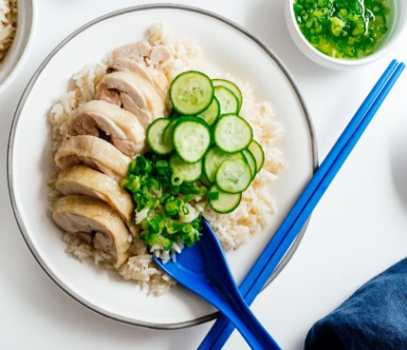

Have you ever had Hainanese chicken rice before? Are you as obsessed with it as I am? I’m guessing the answer is no because I have a lifelong, deep obsession with chicken rice. It’s my ultimate comfort food, my all-time-favorite go to meal, my version of Anton Ego’s mom’s ratatouille. (You know, the scene in in the Pixar movie where Anton is taken back to his mom’s kitchen and she serves him ratatouille and all is right with the world.) Chicken rice is the food that can bring me back to my childhood and transport me to some of my favorite memories as an adult. I’m not embarrassed to say that chicken rice is my everything.
All cultures have some sort of chicken and rice. The Japanese have oyakodon, Latin Americans have arroz con pollo, and Southeast Asians (and Hainanese people) have Hainanese chicken rice. Like most chicken and rice dishes, it’s simple at heart: poached chicken and seasoned rice served with a variety of sauces.
Like lots of immigrant adapted foods, there are actually a bunch of different types of Hainanese chicken rices: Singaporean, Malaysian, Vietnamese, and Thai. Growing up, it was a staple in our house. My mom must’ve made it at least once a week because she knew it was my favorite. She even made it for me for my birthday dinner last year.
I love making chicken rice, I find it therapeutic somehow. But sometimes I just want to eat chicken and rice without cooking a whole chicken. This recipe is for those times: skin-on boneless chicken thighs and rice are cooked in one pot for ease and less dishes. Win-win!
This is a basic one pot Hainanese chicken rice with all the flavor and none of the fuss. The recipe starts with chicken fat. If you’re like me and love chicken rice and make it on the regular, you’ll want to keep a jar of rendered chicken fat in the fridge. Even if you’re not like me and don’t want to make chicken rice every day of the week, you’ll want to keep a jar of chicken fat in the fridge. Chicken fat is PURE FLAVOR.
Chicken fat is what makes the rice part of chicken rice taste so good. But, if you don’t have any chicken fat, don’t worry, toasting your rice in any fat is going to give it a glossy, delicious flavor coat. The key is cooking the ginger, garlic, and shallots in fat so that the aromatics release their deliciousness into the rice.
When chicken rice is done well, you almost don’t need the chicken – at least that’s what Mike thinks! I hope you give this recipe a try, it’s the perfect comfort food for chilly fall days.